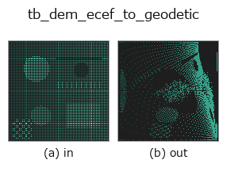

typed op• 数据种类:points → points
• 调用:fullseye.apply(img, "tb_dem_ecef_to_geodetic", a=0.5, b=0.5)(2-D 的模型是一张图 + 两个标量旋钮 a,b∈[0,1])

*图为在 128×128 合成输入上实际运行的输出。左为输入，右为输出。点云以俯视散点显示(亮度 = z)，一维序列为折线，体数据为沿 z 的最大值投影，视频为中间帧，复数图像为幅值；无法成像的返回值直接显示数值。*
*旋钮 a 不改变输出(实测: 0.1 / 0.5 / 0.9 相同)。*
*旋钮 b 不改变输出(实测: 0.1 / 0.5 / 0.9 相同)。*
阶段(前置算子 → 本算子，从左到右):
▸ tb_dem_ecef_to_geodetic: stages (docs site)
换别的图像(合成场景 / 照片 / 硬币。上排为输入，下排为对应输出。旋钮取默认):
▸ tb_dem_ecef_to_geodetic: other inputs (docs site)
> 该算子的说明尚无译文,以下照原文给出。
ECEF → 測地座標。返りは `(..., 3) の (緯度[度], 経度[度], 高さ[m])`。
Bowring (1976) の閉形式に近い解法。往復(測地→ECEF→測地)の誤差は
どこを標本にしたかで 1 桁以上動くので、範囲つきで書く(2026-09-08 再測。
以前は「緯度・経度 1e-12 度未満、高さ 1e-7 m 未満」と書いていたが、
★これは緯度 ±85 度・高さ -500〜9000 m の 4000 点で既に **最大 6.4e-12 度 /
8.5e-07 m** と超えていた —— 中央値 2.6e-13 度 / 3.3e-08 m と混同していた):
• 緯度 ±85 度・高さ -500〜9000 m … 緯度 中央 2.6e-13 / 最大 6.4e-12 度、
高さ 中央 3.3e-08 / 最大 8.5e-07 m
• 緯度 ±89.9 度・高さ -11 km〜40 km … 緯度 中央 2.9e-12 / 最大 1.3e-10 度、
高さ 中央 3.5e-07 / 最大 1.7e-05 m(極に寄せると 20 倍悪くなる)
経度はどちらでも最大 2.8e-14 度。いずれも地上では µm 以下で、実用上は
「誤差の床」として扱ってよいが、中央値を最大値として引用しないこと。
地心球座標が欲しいだけなら、`r = |xyz|` と
`geocentric_lat = asin(z/r)` で足りる —— ただしそれは測地緯度ではない
(両者は最大 0.19 度、距離にして約 21 km ずれる)。この op が返すのは
地図や GPS と同じ測地緯度のほう。
★地球の中心付近では fail-closed で拒否する(2026-09-08、
poc_geodetic_height_frames が踏んだ)。楕円体の縮閉線(evolute)
`(a·p)^(2/3) + (b·|z|)^(2/3) < (a²-b²)^(2/3)` の内側では、楕円体面から
立てた法線が 1 本に決まらず、測地緯度がそもそも一意でない。それまでは
ここで黙って `lat = 180 度` を返していた —— 緯度として存在しない値で、
しかも**自分の逆関数 :func:dem_geodetic_to_ecef が
「lat_deg must be within [-90, 90]」で拒否する**値だった。
領域は赤道面で軸から `e²a = 42697.7 m、極軸上で (a²-b²)/b = 42841.3 m`
まで(実測: 42600 m で 180 度、42700 m で 0 度 —— 閉形式の境界とちょうど一致)。
2-D 進化レジストリへ橋渡しした dem の op `dem_ecef_to_geodetic。実装は同じで、呼び出し規約だけ op(v, a, b) に合わせてある。この op に調整点は無く、a も b` も使われない。
• 示例数据目录(下载 URL / 许可证) —— 2-D 用 skimage.data(BSD/公有领域)加合成图,3-D 给出真实数据源(Stanford/PDS 等)的下载 URL。
• 算子来历与参考文献 —— 该算子族所依据的研究/方法出处。
下面的程序已确认可以运行(与图相同的输入)。在 Studio 帮助中，此块会变成按钮，可当场加载并运行。
img_to_points 0.50 0.50 tb_dem_ecef_to_geodetic 0.50 0.50
▸ Load this pipeline · Load & run
下面的示例调用的是底层账本算子 dem_ecef_to_geodetic。此桥接算子只是把同一实现适配为 fn(v, a, b) 约定，行为完全相同(只是调用形式不同)。
• dem_geodesy_tour — py -3.11 examples/dem_geodesy_tour.py
• poc_geodetic_height_frames — py -3.11 examples/poc_geodetic_height_frames.py
points 作为输入)identity · tb_points_to_voxel · tb_estimate_point_normals · tb_iss_keypoints · tb_project_points · tb_render_point_depth · tb_statistical_outlier_removal · tb_radius_outlier_removal
typed)tb_points_to_voxel · tb_estimate_point_normals · tb_iss_keypoints · tb_project_points · tb_render_point_depth · tb_statistical_outlier_removal · tb_radius_outlier_removal · tb_voxel_grid_downsample
*Provenance: ops.py — 2D 算子登记表。本条目由 tools/opdocs.py md 自动生成(请勿手工编辑)。*
© 2026 Kazufumi Furuse — Fullseye operator documentation. Licensed under Apache-2.0.
{kind=link}
{kind=link}